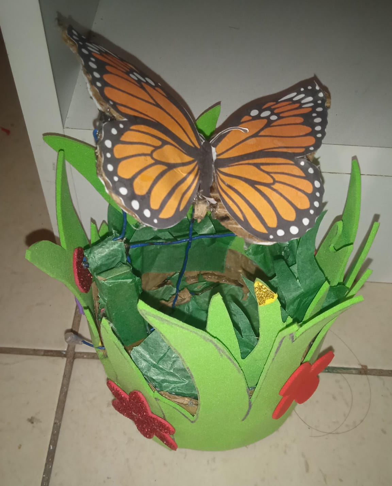

Introducción al proyecto: Metamorfosis Reciclada
El arte cinético utiliza el movimiento para dar vida a las obras, creando no solo una experiencia visual sino también generando conciencia sobre el daño que el ser humano a causado a lo largo del tiempo .
El nombre de este proyecto "Metamorfosis Reciclada" hace alusión al hecho de que se le puede dar una segunda vida a materiales que creemos no tienen valor alguno.
Objetivos
Objetivo General
Crear una escultura cinética de mariposa monarca usando materiales reciclados que simule el movimiento natural de sus alas.
Objetivo Específico
Fomentar la conciencia ecológica y artística mediante la reutilización creativa de residuos.
Desarrollo
Investigación sobre la mariposa monarca
La mariposa monarca (Danaus plexippus) es reconocida por sus alas anaranjadas con venas negras y puntos blancos. Este maravilloso insecto fue recientemente, en Julio de 2022 declarado en peligro de extinción debido a la actividad humana debido a la deforestación, el cambio climático y muchos otros facotres en el que el ser humano a influido
Materiales
- 1 pinza de madera
- 3 pedazos de alambre espiral metálico
- Cartón
- Papel brillante
- Palillos de dientes
- Flores de fomix
- Mariposa de papel bond
Insumos extra
- 2 Barras de silicona
- Alicate
- Tijera
Proceso
- o Recorta el molde de mariposa en una base de cartón.
- o Darle forma al alambre para obtener un mecanismo funcional.
- o Coloca un pedazo de alambre en el cuerpo de la mariposa.
- o Une la mariposa junto con la pinza de madera.
- o Coloca los dos alambres sobrantes uniendo los extremos de las alas junto con la pinza.
- o Recorta la base y una tira de cartón para el borde de la misma.
- o Pega la estructura anteriormente creada con la pinza a la base.
- o Finalmente, agrega la decoración con el fomix y el papel brillante.
Video Tutorial
Conclusión
Esta escultura combina arte, ciencia y sostenibilidad, creando conciencia sobre la importancia de reciclar y proteger a las especies amenazadas como la mariposa monarca.
Anexos
Algunas imágenes del proyecto terminado y otros proyectos similares:



Referencias Bibliográficas
- Anónimo.(2023). La mariposa monarca en peligro. WWF México https://www.wwf.org.mx
- National Geographic. (2022). Monarch Butterfly Facts. National Geographic. https://www.nationalgeographic.com